Repères du catalogue
Quatre-vingt-treize casques, vingt masques et six protections oculaires : la tête est la zone la plus coûteuse à protéger et la plus sensible au poids.
93 + 20 + 6
Casques, masques et protections. Quatre-vingt-treize casques, vingt masques et six protections oculaires dans l'export du 18 novembre 2026.
1 – 6
Classes présentes. De la classe 1 à la classe 5 pour les casques ; jusqu'à la classe 6 pour les masques de soudure.
6
Matériaux. Matériau combiné pour la moitié des casques, puis UHMWPE, aramid et acier de blindage ; verre pour les protections oculaires.
Le casque protège, la position de la visière compte. Une visière de classe 6 peut ne couvrir que les yeux. Le classement des protections oculaires de l'export est trompeur si l'on ne regarde pas les zones : la couverture réelle est dans la colonne des zones de chaque pièce.
Le modèle de protection
La protection de la tête se compose de trois strates qui se recouvrent partiellement : le casque, le masque, la protection oculaire. Les strates se gênent entre elles, et c'est là que les compatibilités de l'export deviennent utiles.
| Couche | Ce qu’elle mesure | Où la lire |
|---|---|---|
| Zone | La partie du corps touchée par un tir. Une pièce couvre un ensemble de zones ; le jeu calcule zone par zone. | Colonne Zones du catalogue |
| Classe | La capacité d'une matière à arrêter une munition, de 1 à 6. Elle appartient à la plaque ou à l'armure souple. | Colonne Classe du catalogue |
| Durabilité | La résistance totale de la pièce avant qu'elle ne cède. Chaque impact en retire une part liée au matériau. | Colonne Durabilité du catalogue |
| Mobilité | Le poids et les pénalités de vitesse, de rotation et d'ergonomie, qui s'ajoutent aux vôtres. | Colonnes Poids et Prix de base du catalogue |
La règle de pénétration appliquée par le jeu depuis le correctif 0.14.6.0 du 25 avril 2024 est détaillée sur la page balistique.
Les huit matériaux
La matière détermine la destructibilité, c’est-à-dire la part de sa résistance qui part à chaque impact, et l’usure appliquée lors d’une réparation. Les deux valeurs viennent de l’export : elles sont identiques pour toutes les pièces d’un même matériau.
| Matériau | Destructibilité | Usure (réparation) | Usure (kit de réparation) |
|---|---|---|---|
| Aramid | 0.1875 | 3 % – 7 % | 2 % – 6 % |
| UHMWPE | 0.3375 | 1 % – 3 % | 0 % – 2 % |
| Matériau combiné | 0.375 | 10 % – 15 % | 9 % – 14 % |
| Titane | 0.4125 | 6 % – 10 % | 6 % – 9 % |
| Aluminium | 0.45 | 6 % – 10 % | 6 % – 9 % |
| Acier de blindage | 0.525 | 1 % – 3 % | 0 % – 2 % |
| Céramique | 0.6 | 17 % – 22 % | 16 % – 20 % |
| Verre | 0.6 | 23 % – 42 % | 21 % – 38 % |
La colonne Réparation donne la perte de résistance entre la version neuve et la version réparée. Un matériau peu destructible mais très usé se répare mal : c’est le compromis du titane et de l’aluminium.
Les six classes
La classe va de 1 à 6. Elle décrit la matière, pas la pièce entière : une plaque de classe 6 montée dans un gilet de classe 2 protège autant que la plaque, pour les zones que la plaque couvre.
| Classe | Pièces | Durabilité | Matériaux dominants |
|---|---|---|---|
| Classe 1 | 10 | 20 – 150 | Verre, Aramid, UHMWPE |
| Classe 2 | 6 | 40 – 156 | Aramid, UHMWPE |
| Classe 3 | 34 | 35 – 180 | UHMWPE, Aramid, Matériau combiné |
| Classe 4 | 58 | 30 – 180 | Matériau combiné, Acier de blindage, UHMWPE |
| Classe 5 | 9 | 40 – 90 | Acier de blindage, Matériau combiné, Titane |
| Classe 6 | 1 | 100 – 100 | Acier de blindage |
| Sans classe | 1 | — | Masque |
Les pièces sans classe ne sont pas des pièces sans blindage : ce sont les accessoires dont la catégorie n’implique pas de protection chiffrée, comme une visière ou une protection auditive.
Casques, masques et protections oculaires
Les cent dix-neuf pièces de tête de l'export, avec leurs zones, leur poids et leur classe. Le filtre porte sur la catégorie, la classe et le matériau.
| Image | Pièce | Classe | Matériau | Durabilité | Zones | Poids (kg) | Emplacements à plaques | Prix de base (₽) |
|---|---|---|---|---|---|---|---|---|
 | Casque FORT Kiver-MCasque | 3 | UHMWPE | 63 | 3 | 1,20 kg | 0 / 3 | 31 121 ₽ |
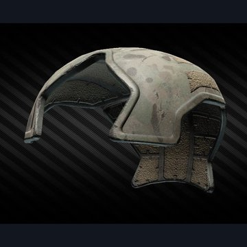 | Lunettes balistiquesProtection oculaire | 1 | Verre | 25 | 0 | 0,11 kg | 0 / 0 | 16 900 ₽ |
 | Casque anti-émeute Kolpak-1SCasque | 2 | Aramid | 45 | 3 | 1,90 kg | 0 / 3 | 7 999 ₽ |
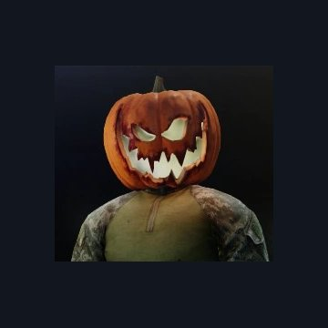 | Casque citrouille tactiqueCasque | 2 | UHMWPE | 40 | 8 | 1,20 kg | 0 / 0 | 10 000 ₽ |
 | Casque Ops-Core FAST MT Super High Cut (noir)Casque | 4 | Matériau combiné | 48 | 2 | 0,90 kg | 0 / 2 | 105 405 ₽ |
 | Casque 6B47 Ratnik-BSh (Olive Drab)Casque | 3 | Aramid | 45 | 3 | 1,30 kg | 0 / 3 | 35 862 ₽ |
 | Casque 6B47 Ratnik-BSh (Digital Flora)Casque | 3 | Aramid | 45 | 3 | 1,30 kg | 0 / 3 | 35 410 ₽ |
 | Casque UNTARCasque | 3 | Aramid | 45 | 3 | 2,20 kg | 0 / 3 | 28 333 ₽ |
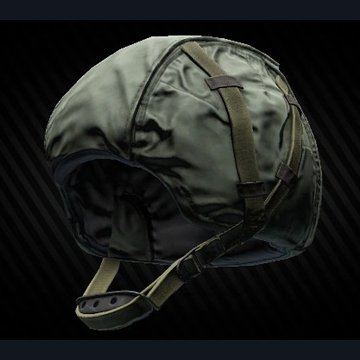 | Casque SSSh-94 SFERA-SCasque | 3 | Acier de blindage | 135 | 3 | 3,50 kg | 0 / 3 | 31 999 ₽ |
 | Casque pare-balles Altyn (Olive Drab)Casque | 5 | Acier de blindage | 81 | 3 | 2,50 kg | 0 / 3 | 168 000 ₽ |
 | Casque ZSh-1-2M (Olive Drab)Casque | 4 | Matériau combiné | 63 | 3 | 3,70 kg | 0 / 3 | 48 929 ₽ |
 | Casque Zsh-1-2M (noir)Casque | 4 | Matériau combiné | 63 | 3 | 3,70 kg | 0 / 3 | 44 599 ₽ |
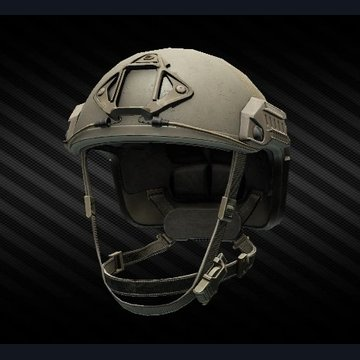 | Casque Ops-Core FAST MT Super High Cut (Urban Tan)Casque | 4 | Matériau combiné | 48 | 2 | 0,90 kg | 0 / 2 | 95 101 ₽ |
 | Casque HighCom Striker ULACH IIIA (noir)Casque | 4 | UHMWPE | 66 | 3 | 1,90 kg | 0 / 3 | 93 579 ₽ |
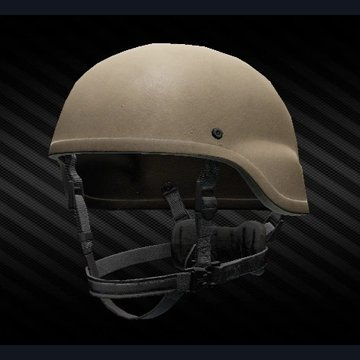 | Casque HighCom Striker ULACH IIIA (Desert Tan)Casque | 4 | UHMWPE | 66 | 3 | 1,90 kg | 0 / 3 | 87 426 ₽ |
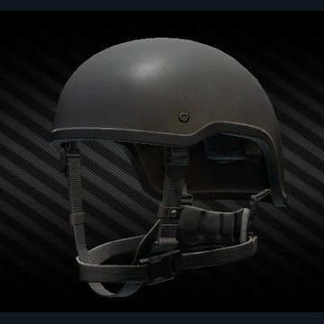 | Casque HighCom Striker ACHHC IIIA (noir)Casque | 4 | Matériau combiné | 36 | 2 | 1,20 kg | 0 / 2 | 52 160 ₽ |
 | Casque HighCom Striker ACHHC IIIA (Olive Drab)Casque | 4 | Matériau combiné | 36 | 2 | 1,20 kg | 0 / 2 | 53 040 ₽ |
 | Masque à gaz DevTac RoninCasque | 4 | Matériau combiné | 180 | 6 | 2,65 kg | 0 / 5 | 69 442 ₽ |
 | Masque griffé blindéMasque | — | — | — | 0 | 0,30 kg | 0 / 0 | 7 500 ₽ |
 | Lunettes anti-fragmentation 6B34Protection oculaire | 1 | Verre | 25 | 0 | 0,12 kg | 0 / 0 | 17 100 ₽ |
 | Casque léger LZSh (Olive Drab)Casque | 3 | Aramid | 36 | 2 | 0,95 kg | 0 / 2 | 32 145 ₽ |
 | Casque acier SSh-68 (Olive Drab)Casque | 3 | Acier de blindage | 54 | 3 | 1,50 kg | 0 / 3 | 26 201 ₽ |
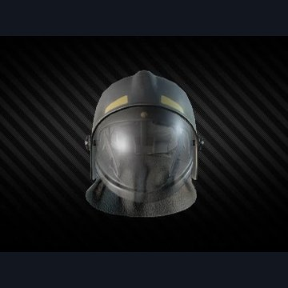 | Casque de pompier ShPMCasque | 2 | Aramid | 96 | 7 | 1,50 kg | 0 / 4 | 9 200 ₽ |
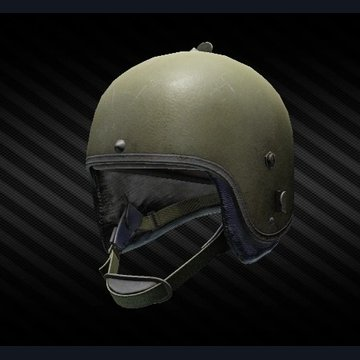 | Casque pare-balles Maska-1Sch (Olive Drab)Casque | 4 | Acier de blindage | 108 | 3 | 2,60 kg | 0 / 3 | 62 132 ₽ |
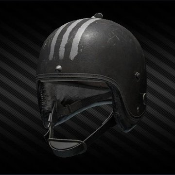 | Casque anti-émeute PSh-97 "DJETA"Casque | 2 | Aramid | 156 | 5 | 1,30 kg | 0 / 4 | 10 299 ₽ |
 | Casque pare-balles Maska-1Sch (édition Killa)Casque | 4 | Acier de blindage | 108 | 3 | 2,60 kg | 0 / 3 | 67 397 ₽ |
 | Casque Crye Precision AirFrame (Tan)Casque | 4 | Matériau combiné | 48 | 2 | 0,88 kg | 0 / 2 | 87 457 ₽ |
 | Casque pare-balles Vulkan-5 LShZ-5 (noir)Casque | 5 | Matériau combiné | 75 | 3 | 4,50 kg | 0 / 3 | 146 491 ₽ |
 | Casque MSA ACH TC-2001 MICH Series (Olive Drab)Casque | 4 | Matériau combiné | 30 | 2 | 1,40 kg | 0 / 2 | 52 139 ₽ |
 | Casque MSA ACH TC-2002 MICH Series (Olive Drab)Casque | 4 | Matériau combiné | 32 | 2 | 1,45 kg | 0 / 2 | 49 251 ₽ |
 | Casque BNTI LShZ-2DTM (noir)Casque | 4 | Matériau combiné | 99 | 3 | 3,40 kg | 0 / 3 | 78 199 ₽ |
 | Casque TSH-4M-L souple d'équipage de charsCasque | 1 | Aramid | 105 | 3 | 0,90 kg | 0 / 3 | 6 000 ₽ |
 | Casque balistique Team Wendy EXFIL (noir)Casque | 4 | Matériau combiné | 54 | 2 | 1,18 kg | 0 / 2 | 113 166 ₽ |
 | Casque balistique Team Wendy EXFIL (Coyote Brown)Casque | 4 | Matériau combiné | 54 | 2 | 1,18 kg | 0 / 2 | 101 350 ₽ |
 | Casque de combat MSA Gallet TC 800 High Cut (noir)Casque | 4 | Matériau combiné | 36 | 2 | 1,17 kg | 0 / 2 | 54 120 ₽ |
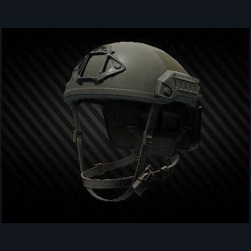 | Casque Tac-Kek FAST MT (réplique)Casque | 1 | UHMWPE | 48 | 2 | 0,45 kg | 0 / 2 | 11 000 ₽ |
 | Casque Diamond Age Bastion (noir)Casque | 4 | Matériau combiné | 48 | 2 | 1,07 kg | 0 / 2 | 59 545 ₽ |
 | Casque Galvion Caiman HybridCasque | 3 | Matériau combiné | 60 | 2 | 1,12 kg | 0 / 2 | 51 320 ₽ |
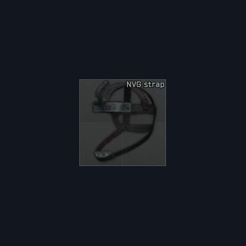 | Casque Rys-TCasque | 5 | Titane | 90 | 3 | 2,50 kg | 0 / 3 | 178 001 ₽ |
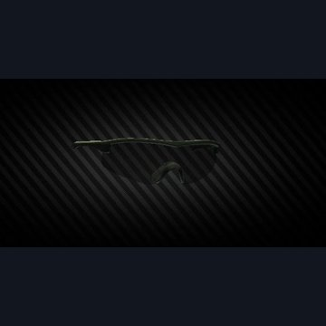 | Lunettes NPP KIASS CondorProtection oculaire | 1 | Verre | 25 | 0 | 0,03 kg | 0 / 0 | 15 600 ₽ |
 | Masque de soudure de Tagilla "UBEY"Masque | 5 | Acier de blindage | 40 | 5 | 1,50 kg | 0 / 0 | 135 000 ₽ |
 | Masque de soudure de Tagilla "Gorilla"Masque | 5 | Acier de blindage | 40 | 5 | 1,50 kg | 0 / 0 | 135 000 ₽ |
 | Bonnet BomberCasque | 1 | Aramid | 150 | 1 | 0,10 kg | 0 / 0 | 29 700 ₽ |
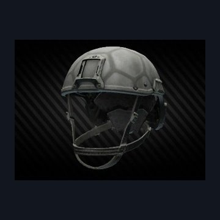 | Casque NFM HJELMCasque | 3 | Matériau combiné | 78 | 2 | 0,80 kg | 0 / 2 | 58 131 ₽ |
 | Masque de Death KnightMasque | 1 | Aramid | 55 | 2 | 0,78 kg | 0 / 0 | 72 000 ₽ |
 | Lunettes Oakley SI BatwolfProtection oculaire | 1 | Verre | 20 | 0 | 0,05 kg | 0 / 0 | 20 700 ₽ |
 | Masque balistique Atomic Defense CQCM (noir)Masque | 3 | UHMWPE | 35 | 4 | 2,10 kg | 0 / 0 | 74 802 ₽ |
 | Casque Diamond Age NeoSteel High Cut (noir)Casque | 4 | Acier de blindage | 72 | 2 | 1,20 kg | 0 / 2 | 81 354 ₽ |
 | Casque NPP KlASS Tor-2 (Olive Drab)Casque | 3 | Matériau combiné | 81 | 3 | 2,40 kg | 0 / 3 | 52 681 ₽ |
 | Casque balistique Armor Co. Bastion (Armor Black)Casque | 4 | Matériau combiné | 50 | 2 | 1,44 kg | 0 / 2 | 69 444 ₽ |
 | Casque balistique Armor Co. Bastion (OD Green)Casque | 4 | Matériau combiné | 50 | 2 | 1,44 kg | 0 / 2 | 65 823 ₽ |
 | Casque balistique Armor Co. Bastion (MultiCam)Casque | 4 | Matériau combiné | 50 | 2 | 1,44 kg | 0 / 2 | 62 412 ₽ |
 | DevTac Ronin helmetCasque | 3 | Aramid | 180 | 6 | 1,38 kg | 0 / 5 | 32 097 ₽ |
 | Casque 6B47 Ratnik-BSh (EMR Arctic)Casque | 3 | Aramid | 45 | 3 | 1,30 kg | 0 / 3 | 35 675 ₽ |
 | Casque balistique MTEK FLUX (MultiCam Alpine)Casque | 4 | Matériau combiné | 50 | 2 | 1 kg | 0 / 2 | 97 711 ₽ |
 | Casque balistique MTEK FLUX (Olive Drab)Casque | 4 | Matériau combiné | 50 | 2 | 1 kg | 0 / 2 | 97 525 ₽ |
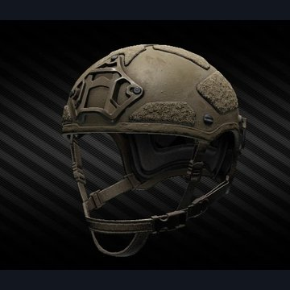 | Casque balistique MTEK STRIKE (Coyote)Casque | 4 | Matériau combiné | 40 | 2 | 0,90 kg | 0 / 2 | 55 604 ₽ |
 | Casque balistique MTEK STRIKE (Coyote/MultiCam Arid)Casque | 4 | Matériau combiné | 40 | 2 | 0,95 kg | 0 / 2 | 56 511 ₽ |
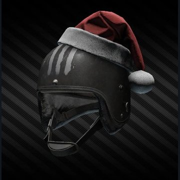 | Casque pare-balles Maska-1Sch (édition de Noël)Casque | 4 | Acier de blindage | 108 | 3 | 2,70 kg | 0 / 3 | 67 397 ₽ |
 | Masque de soudure de Tagilla "ZABEY"Masque | 6 | Acier de blindage | 100 | 8 | 1,50 kg | 0 / 0 | 1 ₽ |
 | Atomic Defense CQCM ballistic mask (Smile)Masque | 3 | UHMWPE | 35 | 4 | 2,10 kg | 0 / 0 | 108 463 ₽ |
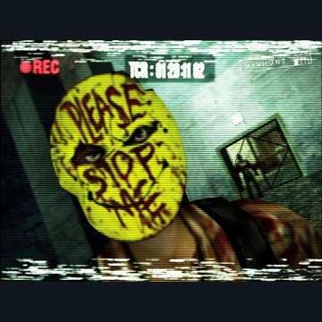 | Atomic Defense CQCM ballistic mask (Stop Me)Masque | 3 | UHMWPE | 35 | 4 | 1,50 kg | 0 / 0 | 108 463 ₽ |
 | Atomic Defense CQCM ballistic mask (Scars)Masque | 3 | UHMWPE | 35 | 4 | 1,50 kg | 0 / 0 | 108 463 ₽ |
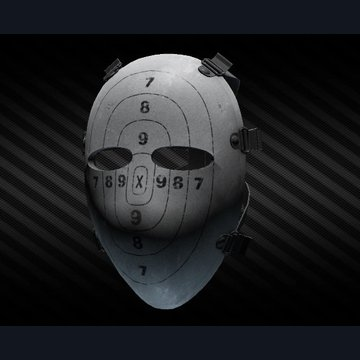 | Atomic Defense CQCM ballistic mask (Target)Masque | 3 | UHMWPE | 35 | 4 | 1,50 kg | 0 / 0 | 108 463 ₽ |
 | Atomic Defense CQCM ballistic mask (Skull)Masque | 3 | UHMWPE | 35 | 4 | 1,50 kg | 0 / 0 | 108 463 ₽ |
 | Atomic Defense CQCM ballistic mask (Demon)Masque | 3 | UHMWPE | 35 | 4 | 1,50 kg | 0 / 0 | 108 463 ₽ |
 | Atomic Defense CQCM ballistic mask (El Día de Muertos)Masque | 3 | UHMWPE | 35 | 4 | 1,50 kg | 0 / 0 | 108 463 ₽ |
 | Atomic Defense CQCM ballistic mask (Ping)Masque | 3 | UHMWPE | 35 | 4 | 1,50 kg | 0 / 0 | 119 683 ₽ |
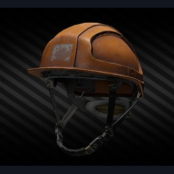 | SHIELD Absolute Cinema hard hat (Orange)Casque | 2 | Aramid | 96 | 7 | 0,45 kg | 0 / 4 | 9 200 ₽ |
 | SHIELD Absolute Cinema hard hat (White)Casque | 2 | Aramid | 96 | 7 | 0,45 kg | 0 / 4 | 9 200 ₽ |
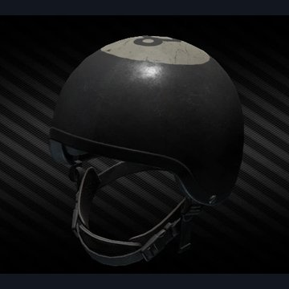 | Vulkan-5 LShZ-5 bulletproof helmet (Eight-ball)Casque | 5 | Matériau combiné | 75 | 3 | 4,50 kg | 0 / 3 | 146 491 ₽ |
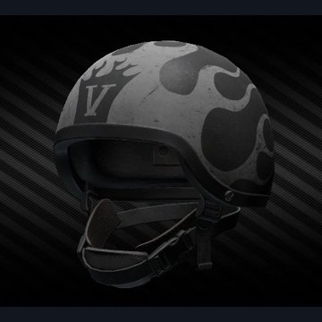 | Vulkan-5 LShZ-5 bulletproof helmet (Flame)Casque | 5 | Matériau combiné | 75 | 3 | 4,50 kg | 0 / 3 | 146 491 ₽ |
 | Vulkan-5 LShZ-5 bulletproof helmet (Camouflage)Casque | 5 | Matériau combiné | 75 | 3 | 4,50 kg | 0 / 3 | 146 491 ₽ |
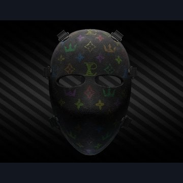 | Atomic Defense CQCM ballistic mask (Loui Peeton)Masque | 3 | UHMWPE | 35 | 4 | 2,10 kg | 0 / 0 | 74 802 ₽ |
 | Atomic Defense CQCM ballistic mask (Toxic)Masque | 3 | UHMWPE | 35 | 4 | 2,10 kg | 0 / 0 | 74 802 ₽ |
 | Atomic Defense CQCM ballistic mask (Crash Tested)Masque | 3 | UHMWPE | 35 | 4 | 2,10 kg | 0 / 0 | 74 802 ₽ |
 | Atomic Defense CQCM ballistic mask (Demonic Face)Masque | 3 | UHMWPE | 35 | 4 | 2,10 kg | 0 / 0 | 74 802 ₽ |
 | DevTac Ronin Respirator (Beast)Casque | 4 | Matériau combiné | 180 | 6 | 2,65 kg | 0 / 5 | 69 442 ₽ |
| Masque à gaz DevTac Ronin)Casque | 4 | Matériau combiné | 180 | 6 | 2,65 kg | 0 / 5 | 69 442 ₽ |
 | Galvion Caiman Hybrid helmet (MultiCam)Casque | 3 | Matériau combiné | 60 | 2 | 1,12 kg | 0 / 2 | 51 320 ₽ |
 | Galvion Caiman Hybrid helmet (Mutualist)Casque | 3 | Matériau combiné | 60 | 2 | 1,12 kg | 0 / 2 | 51 320 ₽ |
 | Diamond Age NeoSteel High Cut helmet (Orange Stains)Casque | 4 | Acier de blindage | 72 | 2 | 1,20 kg | 0 / 2 | 81 354 ₽ |
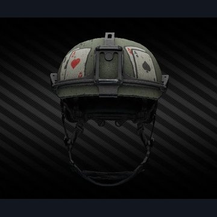 | Diamond Age NeoSteel High Cut helmet (Aces)Casque | 4 | Acier de blindage | 72 | 2 | 1,20 kg | 0 / 2 | 81 354 ₽ |
 | Champion's helmetCasque | 4 | UHMWPE | 100 | 5 | 1,90 kg | 0 / 4 | 87 004 ₽ |
 | HighCom Striker ULACH IIIA helmet (Sand)Casque | 4 | UHMWPE | 66 | 3 | 1,90 kg | 0 / 3 | 93 579 ₽ |
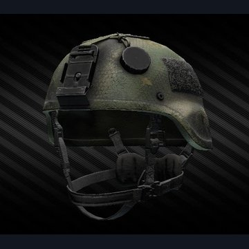 | HighCom Striker ULACH IIIA helmet (Green Stripes)Casque | 4 | UHMWPE | 66 | 3 | 1,90 kg | 0 / 3 | 93 579 ₽ |
 | HighCom Striker ULACH IIIA helmet (Mesh Spray)Casque | 4 | UHMWPE | 66 | 3 | 1,90 kg | 0 / 3 | 93 579 ₽ |
 | HighCom Striker ULACH IIIA helmet (Coyote Stripes)Casque | 4 | UHMWPE | 66 | 3 | 1,90 kg | 0 / 3 | 93 579 ₽ |
| Atomic Defense CQCM ballistic mask (Loui Peeton)Masque | 3 | UHMWPE | 35 | 4 | 2,10 kg | 0 / 0 | 74 802 ₽ | |
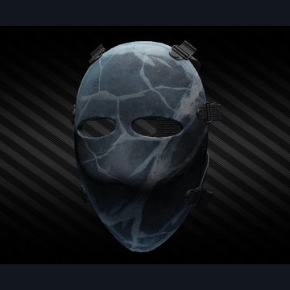 | Atomic Defense CQCM ballistic mask (Blasted Ice)Masque | 3 | UHMWPE | 35 | 4 | 2,10 kg | 0 / 0 | 74 802 ₽ |
 | Casque Galvion Caiman Hybrid (MultiCam Alpine)Casque | 3 | Matériau combiné | 60 | 2 | 1,12 kg | 0 / 2 | 51 320 ₽ |
 | HighCom Striker ULACH IIIA helmet (Winter Mesh Spray)Casque | 4 | UHMWPE | 66 | 3 | 1,90 kg | 0 / 3 | 93 579 ₽ |
 | Casque pare-balles Maska-1Sch (édition Vida)Casque | 4 | Acier de blindage | 108 | 3 | 2,60 kg | 0 / 3 | 67 397 ₽ |
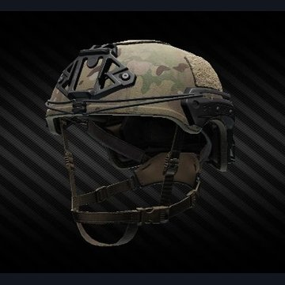 | Team Wendy EXFIL Ballistic Helmet (MultiCam)Casque | 4 | Matériau combiné | 54 | 2 | 1,18 kg | 0 / 2 | 101 350 ₽ |
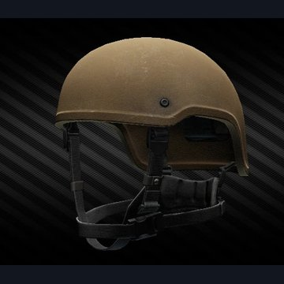 | HighCom Striker ACHHC IIIA helmet (Coyote Brown)Casque | 4 | Matériau combiné | 36 | 2 | 1,20 kg | 0 / 2 | 52 160 ₽ |
 | Crye Precision AirFrame helmet (Mesh Green)Casque | 4 | Matériau combiné | 48 | 2 | 0,88 kg | 0 / 2 | 83 084 ₽ |
 | Crye Precision AirFrame helmet (OD Green)Casque | 4 | Matériau combiné | 48 | 2 | 0,88 kg | 0 / 2 | 87 457 ₽ |
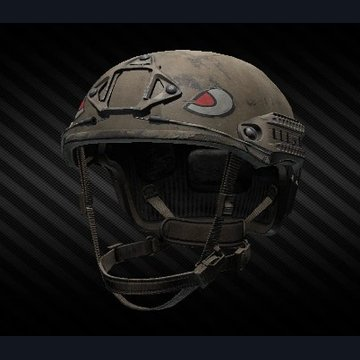 | Crye Precision AirFrame helmet (Shark)Casque | 4 | Matériau combiné | 48 | 2 | 0,88 kg | 0 / 2 | 87 457 ₽ |
 | Crye Precision AirFrame helmet (Morbus Incorsio)Casque | 4 | Matériau combiné | 48 | 2 | 0,88 kg | 0 / 2 | 87 457 ₽ |
 | Crye Precision AirFrame M-LOK helmet (Black)Casque | 4 | Matériau combiné | 48 | 2 | 0,88 kg | 0 / 2 | 87 457 ₽ |
 | Crye Precision AirFrame M-LOK helmet (Bull)Casque | 4 | Matériau combiné | 48 | 2 | 0,88 kg | 0 / 2 | 87 457 ₽ |
 | Crye Precision AirFrame helmet (Old School)Casque | 4 | Matériau combiné | 48 | 2 | 0,88 kg | 0 / 2 | 87 457 ₽ |
 | Atlant Armour Titan Aramid helmet (OD Green)Casque | 4 | Matériau combiné | 48 | 2 | 1,58 kg | 0 / 2 | 87 457 ₽ |
 | Atlant Armour Titan Aramid helmet (MultiCam)Casque | 4 | Matériau combiné | 48 | 2 | 1,58 kg | 0 / 2 | 87 457 ₽ |
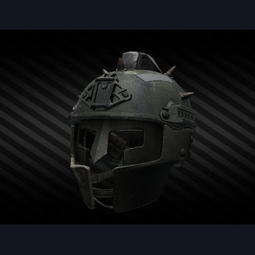 | Atlant Armour Titan Aramid helmet (Rudiarius)Casque | 4 | Matériau combiné | 78 | 5 | 3,42 kg | 0 / 4 | 108 567 ₽ |
 | Wiley X SPEAR ballistic goggles (Black)Protection oculaire | 1 | Verre | 25 | 0 | 0,12 kg | 0 / 0 | 12 755 ₽ |
 | Wiley X SPEAR ballistic goggles (Tan)Protection oculaire | 1 | Verre | 25 | 0 | 0,12 kg | 0 / 0 | 12 755 ₽ |
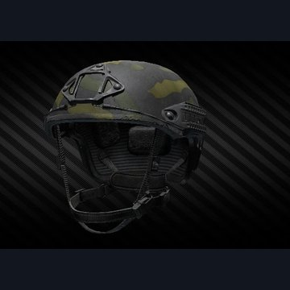 | Crye Precision AirFrame helmet (Botched)Casque | 4 | Matériau combiné | 48 | 2 | 0,88 kg | 0 / 2 | 87 457 ₽ |
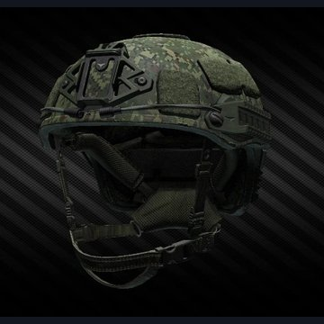 | Atlant Armour Titan Aramid helmet (EMR)Casque | 4 | Matériau combiné | 48 | 2 | 1,58 kg | 0 / 2 | 87 457 ₽ |
 | MTEK STRIKE Ballistic helmet (Carbon Fiber)Casque | 4 | Matériau combiné | 40 | 2 | 0,90 kg | 0 / 2 | 55 604 ₽ |
 | DevTac Ronin Respirator (LABS Security)Casque | 4 | Matériau combiné | 180 | 6 | 2,65 kg | 0 / 5 | 69 442 ₽ |
 | Altyn assault helmet (Impact Tested)Casque | 5 | Acier de blindage | 81 | 3 | 2,50 kg | 0 / 3 | 168 000 ₽ |
 | Diamond Age NovaSteel helmet (Olive Drab)Casque | 4 | Acier de blindage | 72 | 2 | 1,18 kg | 0 / 2 | 84 637 ₽ |
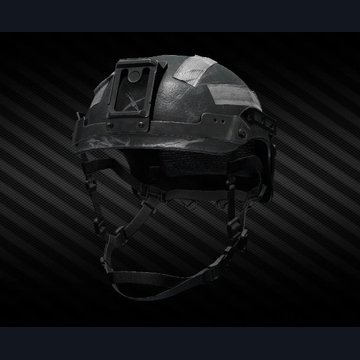 | Diamond Age NovaSteel helmet (Custos Mortis)Casque | 4 | Acier de blindage | 72 | 2 | 1,18 kg | 0 / 2 | 86 497 ₽ |
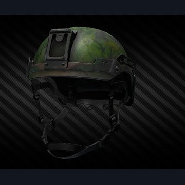 | Diamond Age NovaSteel helmet (Toxin)Casque | 4 | Acier de blindage | 72 | 2 | 1,18 kg | 0 / 2 | 90 888 ₽ |
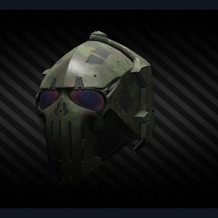 | DevTac Ronin ballistic helmet (Raptor)Casque | 3 | Aramid | 180 | 6 | 1,38 kg | 0 / 5 | 51 919 ₽ |
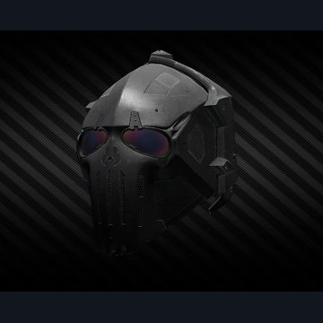 | DevTac Ronin ballistic helmet (Prototype)Casque | 3 | Aramid | 180 | 6 | 1,38 kg | 0 / 5 | 51 919 ₽ |
 | DevTac Ronin ballistic helmet (Olive)Casque | 3 | Aramid | 180 | 6 | 1,38 kg | 0 / 5 | 40 097 ₽ |
 | DevTac Ronin ballistic helmet (Olive Drab)Casque | 3 | Aramid | 180 | 6 | 1,38 kg | 0 / 5 | 32 097 ₽ |
Les accessoires blindés — visières, mâchoires, protections d'oreilles — sont comptés à part : ce sont des pièces compatibles d'un casque précis, et non des pièces de tête autonomes.
Zones couvertes et emplacements
Les emplacements d'un casque sont des points d'accroche : coiffe, arrière, oreilles, visière, mâchoire. Les accessoires listés dans chaque fiche d'export donnent la liste des pièces autorisées pour chacun.
Aucun élément relevé dans les sources consultées.
| Plaque | Classe | Matériau | Durabilité | Zones | Poids (kg) | Ricochet (z) | Prix de base (₽) |
|---|---|---|---|---|---|---|---|
| Plaque balistique Cult Termite | 6 | Titane | 65 | 2 | 3,85 kg | 80 % | 77 018 ₽ |
| Plaque balistique ESAPI niveau IV | 6 | Céramique | 55 | 2 | 3,20 kg | 80 % | 72 426 ₽ |
| Plaque balistique ESBI niveau IV (flanc) | 6 | Céramique | 18 | 4 | 1,15 kg | 80 % | 16 120 ₽ |
| Plaque balistique GAC 4sss2 | 6 | UHMWPE | 50 | 2 | 2,70 kg | 80 % | 85 002 ₽ |
| Plaque balistique Granit (flanc) | 6 | Céramique | 20 | 4 | 1,30 kg | 80 % | 14 521 ₽ |
| Plaque balistique Granit 4RS (arrière) | 6 | Céramique | 50 | 1 | 3,80 kg | 80 % | 49 626 ₽ |
| Plaque balistique Granit 4RS (avant) | 6 | Céramique | 55 | 1 | 3,50 kg | 80 % | 51 402 ₽ |
| Plaque balistique Granit Br5 | 6 | Céramique | 60 | 2 | 3,30 kg | 80 % | 61 955 ₽ |
| Plaque balistique KITECO SC-IV SA | 6 | UHMWPE | 45 | 2 | 2,45 kg | 80 % | 69 705 ₽ |
| Plaque balistique Kiba Arms acier | 6 | Acier de blindage | 50 | 2 | 5,10 kg | 80 % | 52 900 ₽ |
| Plaque balistique Korund-VM-K (arrière) | 6 | Céramique | 45 | 1 | 2,70 kg | 80 % | 42 641 ₽ |
| Plaque balistique NESCO 4400-SA-MC | 6 | Matériau combiné | 60 | 2 | 3,60 kg | 80 % | 68 217 ₽ |
| Plaques balistiques Korund VM-K (avant) | 6 | Céramique | 60 | 1 | 4 kg | 80 % | 53 531 ₽ |
| Plaque balistique Cult Locust | 5 | Titane | 60 | 2 | 2,56 kg | 80 % | 40 355 ₽ |
| Plaque balistique GAC 3s15m | 5 | UHMWPE | 45 | 2 | 0,97 kg | 80 % | 53 801 ₽ |
| Plaque balistique Granit 4 (avant) | 5 | Céramique | 50 | 1 | 3,05 kg | 80 % | 34 756 ₽ |
| Plaque balistique Granit Br4 | 5 | Céramique | 55 | 2 | 2,90 kg | 80 % | 39 146 ₽ |
| Plaque balistique Korund-VM (arrière) | 5 | Acier de blindage | 40 | 1 | 2,30 kg | 80 % | 26 538 ₽ |
| Plaque balistique Korund-VM (flanc) | 5 | Acier de blindage | 25 | 4 | 1,10 kg | 80 % | 7 627 ₽ |
| Plaque balistique SAPI niveau III+ | 5 | Céramique | 50 | 2 | 1,82 kg | 80 % | 37 084 ₽ |
| Plaque balistique SSAPI niveau III+ (flanc) | 5 | Céramique | 15 | 4 | 1 kg | 80 % | 8 804 ₽ |
| Plaque balistique TallCom Guardian | 5 | Matériau combiné | 55 | 2 | 3,50 kg | 80 % | 36 807 ₽ |
| Plaques balistiques Granit 4 (arrière) | 5 | Céramique | 45 | 1 | 3,30 kg | 80 % | 32 703 ₽ |
| Plaques balistiques Korund-VM (avant) | 5 | Acier de blindage | 60 | 1 | 3,40 kg | 80 % | 32 780 ₽ |
| Plaque balistique 6B23-2 (arrière) | 4 | Acier de blindage | 40 | 1 | 3,50 kg | 80 % | 11 201 ₽ |
| Plaque balistique 6B33 (avant) | 4 | Acier de blindage | 50 | 1 | 3,70 kg | 80 % | 15 207 ₽ |
| Plaque balistique Global Armor's acier | 4 | Acier de blindage | 45 | 2 | 3,40 kg | 80 % | 16 079 ₽ |
| Plaque balistique Kiba Arms titane | 4 | Titane | 55 | 2 | 2,25 kg | 80 % | 21 620 ₽ |
| Plaque balistique Monoclete niveau III PE | 4 | UHMWPE | 40 | 2 | 1,35 kg | 80 % | 18 620 ₽ |
| Plaque balistique NewSphereTech niveau III | 4 | Aluminium | 45 | 2 | 2,15 kg | 80 % | 16 842 ₽ |
| Plaque balistique SPRTN Elaphros | 4 | Céramique | 45 | 2 | 1,60 kg | 80 % | 17 254 ₽ |
| Plaque balistique SPRTN Omega | 4 | Matériau combiné | 50 | 2 | 4,39 kg | 80 % | 18 241 ₽ |
| Plaques balistiques 6B13 modifiées (arrière) | 4 | Acier de blindage | 45 | 1 | 4,10 kg | 80 % | 12 038 ₽ |
| Plaque balistique AR500 Legacy Plate | 3 | Matériau combiné | 45 | 2 | 3,85 kg | 80 % | 12 580 ₽ |
| Plaque balistique Zhuk-3 (avant) | 3 | UHMWPE | 40 | 1 | 2,40 kg | 80 % | 10 185 ₽ |
| Plaque balistique légère PRTCTR | 3 | UHMWPE | 35 | 2 | 0,43 kg | 80 % | 13 018 ₽ |
| Plaques balistiques 6B12 (avant) | 3 | Acier de blindage | 50 | 1 | 4,60 kg | 80 % | 12 418 ₽ |
| Plaque balistique Tac-Kek SAPI niveau III+ (réplique) | 1 | UHMWPE | 90 | 2 | 1,10 kg | 80 % | 4 350 ₽ |
Deux casques d'un même modèle peuvent refuser la même visière si la version diffère : l'export distingue les éditions, et le guide les distingue aussi.
Comment s’équiper
Quatre repères pour arbitrer entre deux casques, à partir des chiffres du catalogue.
- Choisir la zone avant le modèle. La tête compte six zones dans l'export : calotte, arrière, oreilles, yeux, mâchoire. Un casque qui ne couvre pas la mâchoire laisse passer les tirs de face, et c'est le cas le plus fréquent.
- Mesurer la surdité. Cent douze pièces de l'export portent une valeur de surdité. Elle ne réduit pas vos dégâts : elle coupe des sons, et l'audio porte une part importante de l'information en jeu.
- Vérifier les blocages. Cinquante et une pièces bloquent les lunettes, deux casques bloquent le casque audio, et certaines interdisent le port d'un casque de protection. Ces indications viennent de l'export et se vérifient dans le client.
- Le ricochet compte autant que la classe. Deux cent vingt-neuf pièces de l'export portent des valeurs de ricochet. Une visière en acier dévie un tir plus souvent qu'une en verre, même si les deux arrêtent la même munition.
Sur les compatibilités. L'export indique les objets autorisés par emplacement d'équipement, mais la validation finale reste celle du client. Un casque et une visière autorisés dans la même fiche peuvent être refusés ensemble selon la configuration.
Sources et limites
Les caractéristiques proviennent de l’export communautaire du 18 novembre 2026, identique dans les trois profils de jeu. Les règles de zone, de classe et de pénétration relèvent des notes de l’éditeur pour les correctifs 0.14.x. Les classements de plaques et les avis d’équipement sont signalés comme opinions et ne servent jamais de source chiffrée.
- Tarkov.dev — items, équipement, munitions et skills (PvP ; autres modes via le catalogue)Données communautaires
- Tarkov.dev — catalogue officiel des exports JSONDonnées communautaires
- Ballistics — mécanique en jeuWiki communautaire
- Escape from Tarkov WikiWiki communautaire
- Armor, plates and materials — classes, zones et réparationAnalyse communautaire
- NamuWiki — tableau des visières et de leurs classesWiki communautaire
- Reddit — visières et casques, portée et surditéAvis communautaire
- Cours d’EFT — casques, ricochets et zones protégéesAnalyse communautaire
- Patch 0.14.0.0 — plaques balistiques, zones d'armure et classes (27 décembre 2023)Éditeur
- Patch 0.14.6.0 — refonte de la pénétration (25 avril 2024)Éditeur
- Patch 0.15.0.0 — classes 5 et 6 retirées du marché (20 août 2024)Éditeur
- Tarkov.dev — classes d’armure, zones et matériauxDonnées communautaires
- Équipement — classes d’armure, zones et ricochetsWiki communautaire